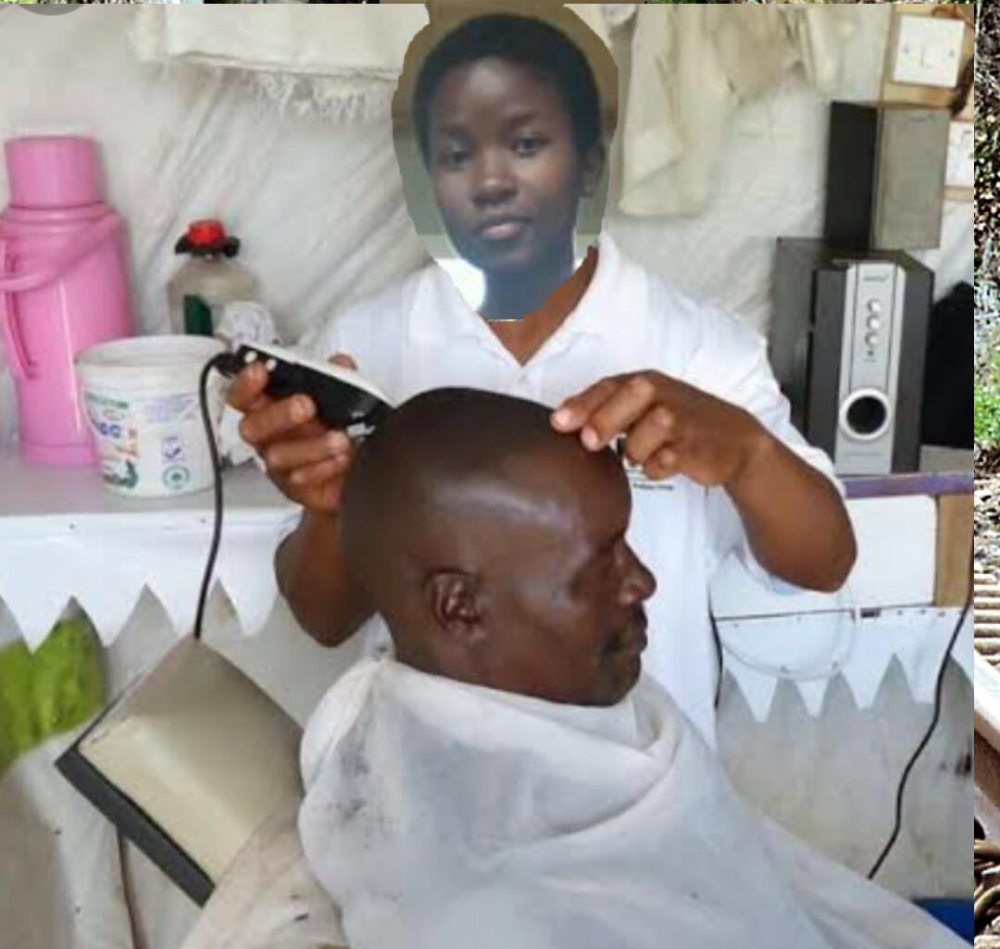

Stylish Barbers is the place to be,giving the best haircuts to our customers at really affordable prices, since 1906 EST.
Stylish Salon has had our customers on locks, since 1987 EST.
Our Prices are as shown below in our catalogue
Stylish Barbers was started in 1906 in Kathemboni,Kiima Kimwe Ward, Machakos. The founders of Stylish Barbers were the late Mr.Ramadi and Mrs.Ramadi.
The goal was to keep Africans of the time tidy and free of lice as there were limited shaving spots and the few that offered better services were assigned for the Brits.
Stylish Barbers was also seeking to save Africans from the exhuberant charges at the shaving spots for the Brits.
|  | |
| Mr.Ramadi | Mrs.Ramadi |
To contact us, kindly reach out with the link below
Contact Us